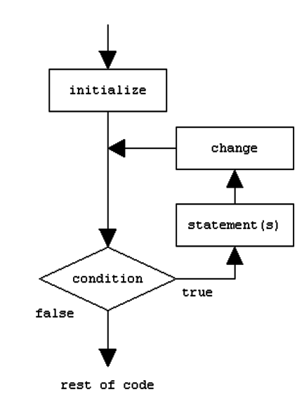
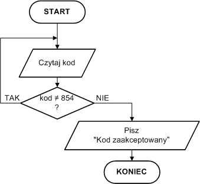
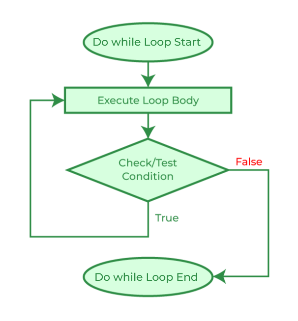

Konstrukcja: for (let i = 0; i < 5; i++) { /* coś tam */ }
Opis: Pętla która powtarza się określoną ilość razy.
Schemat blokowy:
Konstrukcja: while (warunek) { /* kod */ }
Opis: Najpierw sprawdza warunek, potem się wykonuje. Może się nie wykonać wcale.
Schemat blokowy:
Konstrukcja: do { /* kod */ } while (warunek);
Opis: Wykona się zawsze przynajmniej raz, nawet jak warunek jest fałszywy.
Schemat blokowy:
